Motion, Pressure, and Flow Sensors
Instruments 5.2
Imron Rosyadi
Learning Objectives
By the end of this session, you will be able to:
- Relate position, velocity, and acceleration mathematically and explain what an accelerometer actually measures.
- Distinguish rectilinear, angular, vibration, and shock motion and match each to appropriate sensor types.
- Explain the spring–mass accelerometer principle, including natural frequency and damping effects.
- Compare common accelerometer implementations: potentiometric, LVDT, variable‑reluctance, and piezoelectric.
- Define pressure, gauge pressure, and head pressure, and convert among common pressure units.
- Describe how diaphragms, bellows, Bourdon tubes, and solid‑state sensors convert pressure to electrical signals.
- Apply pressure and flow equations to typical design problems (level via pressure, flow via pressure drop, etc.).
Motion: From Position to Acceleration
If an object’s position is \(x(t)\):
Velocity: \[v(t) = \frac{dx(t)}{dt} \tag{16}\]
Acceleration: \[a(t) = \frac{dv(t)}{dt} = \frac{d^2 x(t)}{dt^2} \tag{17}\]
If we know acceleration \(a(t)\), we can integrate to get:
Velocity: \[v(t) = v(0) + \int_0^t a(\tau)\, d\tau \tag{18}\]
Position: \[x(t) = x(0) + \int_0^t v(\tau)\, d\tau \tag{19}\]
Tip
An accelerometer measures \(a(t)\), but with integration (usually electronic) we can estimate \(v(t)\) and \(x(t)\).
Units & “g”
- Proper SI acceleration unit: \(\mathrm{m/s^2}\)
- Velocity: \(\mathrm{m/s}\)
- Position: m
Often accelerations are normalized to earth gravity:
- \(1\ \mathbf{g} \approx 9.8\ \mathrm{m/s^2}\)
So:
- \(a = 2\ \mathbf{g} \Rightarrow a \approx 19.6\ \mathrm{m/s^2}\)
- Smartphone accelerometers will read roughly \(+1\ \mathbf{g}\) “down” even sitting still, due to gravity.
Example 11 – Unit Conversion to m/s² and g
An automobile is accelerating away from a stop sign at \(26.4\ \mathrm{ft/s^2}\).
Find the acceleration in:
- \(\mathrm{m/s^2}\)
- \(\mathbf{g}\)s
Solution
Convert feet to meters:
\[ a = (26.4\ \mathrm{ft/s^2})(12\ \mathrm{in/ft})(2.54\ \mathrm{cm/in})(0.01\ \mathrm{m/cm}) \]
\[ a \approx 8.05\ \mathrm{m/s^2} \]
Express in g’s:
\[ a_{\mathbf{g}} = \frac{8.05\ \mathrm{m/s^2}}{9.8\ \mathrm{m/s^2}/\mathbf{g}} \approx 0.82\ \mathbf{g} \]
Note
That car launch is about \(82\%\) of gravity. Pretty sporty, but still under \(1\ \mathbf{g}\).
Types of Motion & Sensor Needs
Four basic motion categories:
- Rectilinear – straight‑line motion; low angular content.
- Angular (rotational) – rotation about an axis (e.g., motor shaft).
- Vibration – periodic motion about equilibrium, possibly large peak acceleration.
- Shock – very large acceleration/deceleration over a very short time.
Sensor Matching
- Rectilinear:
- Linear accelerometers, often low‑g range.
- Angular:
- Shaft encoders, gyroscopes, rotary potentiometers.
- Vibration:
- High‑bandwidth accelerometers (often piezoelectric).
- Shock:
- High‑g, high‑frequency accelerometers.
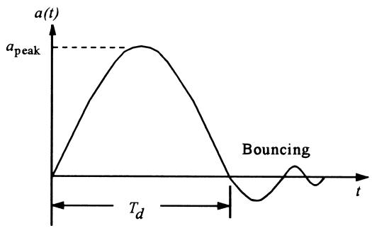
Vibration Motion Model
For simple periodic (harmonic) vibration:
\[ x(t) = x_0 \sin(\omega t) \tag{20} \]
Where:
- \(x(t)\) = position (m)
- \(x_0\) = peak displacement from equilibrium (m)
- \(\omega\) = angular frequency (rad/s)
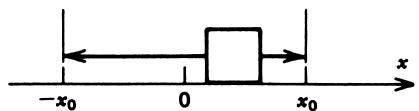
Relationship between frequency and angular frequency:
\[ \omega = 2\pi f \tag{21} \]
Vibration: Velocity & Acceleration
Starting with \[x(t) = x_0 \sin(\omega t)\]
Velocity (first derivative):
\[ v(t) = \omega x_0 \cos(\omega t) \tag{22} \]
Acceleration (second derivative):
\[ a(t) = -\omega^2 x_0 \sin(\omega t) \tag{23} \]
- All three signals are sinusoids at the same frequency.
- They differ by amplitude and phase.
Peak acceleration:
\[ a_{\text{peak}} = \omega^2 x_0 \tag{24} \]
Important
Peak acceleration rises with \(\omega^2\). Doubling frequency quadruples peak acceleration (for the same displacement).
Example 12 – Vibration Peak Acceleration
A water pipe vibrates at \(f = 10\ \mathrm{Hz}\) with displacement \(x_0 = 0.5\ \mathrm{cm}\).
Find:
- Peak acceleration in \(\mathrm{m/s^2}\)
- Peak acceleration in \(\mathbf{g}\)
Solution
Compute \(\omega\) and convert \(x_0\):
- \(\omega = 2\pi f = 20\pi\ \mathrm{rad/s}\)
- \(x_0 = 0.5\ \mathrm{cm} = 0.005\ \mathrm{m}\)
- Peak acceleration:
\[ a_{\text{peak}} = \omega^2 x_0 = (20\pi)^2 (0.005) \approx 19.7\ \mathrm{m/s^2} \]
- Express in g’s:
\[ a_{\text{peak}} = \frac{19.7\ \mathrm{m/s^2}}{9.8\ \mathrm{m/s^2/g}} \approx 2.0\ \mathbf{g} \]
Warning
A 2‑g vibration is serious; repeated exposure can damage pipes, valves, and electronics.
Shock Motion
Shock = very large deceleration over a short time.
Typical characteristics:
- Peak acceleration: often \(> 500\ \mathbf{g}\)
- Duration: milliseconds (ms) range
- Occurs in: drops, impacts, collisions
Key quantities:
- \(a_{\text{peak}}\) – peak acceleration/deceleration
- \(T_d\) – shock duration
- Sometimes we use an average shock value based on velocity change and duration.
Example 13 – Average Shock from a Drop
A TV set is dropped from height \(h = 2\ \mathrm{m}\). If the shock duration at impact is \(T_d = 5\ \mathrm{ms}\), find the average shock in g.
Solution
- Velocity at impact from \(v^2 = 2 g h\):
\[ v^2 = 2(9.8)(2.0) \Rightarrow v \approx 6.3\ \mathrm{m/s} \]
- Average deceleration \(\bar{a}\) over \(T_d\):
\[ \bar{a} = \frac{v}{T_d} = \frac{6.3\ \mathrm{m/s}}{5 \times 10^{-3}\ \mathrm{s}} \approx 1260\ \mathrm{m/s^2} \]
- Convert to g’s:
\[ \bar{a} \approx \frac{1260\ \mathrm{m/s^2}}{9.8\ \mathrm{m/s^2/g}} \approx 128\ \mathbf{g} \]
Warning
\(128\ \mathbf{g}\) average shock explains why the TV breaks apart on impact.
Spring–Mass Accelerometer Principle
Core idea: combine Newton’s law and Hooke’s law.
- Newton: \(F = ma\)
- Hooke: \(F = k \Delta x\)
Equate forces:
\[ ma = k\Delta x \tag{25} \]
Solve for acceleration:
\[ a = \frac{k}{m} \Delta x \tag{26} \]
So:
- A test mass (seismic mass) attached to a spring is accelerated.
- The mass “lags” behind slightly, stretching/compressing the spring by \(\Delta x\).
- Measure \(\Delta x\) → infer \(a\).
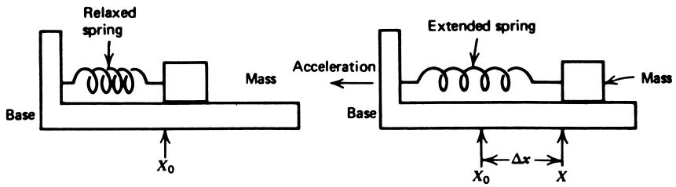
Natural Frequency & Damping
Any mass–spring system has a natural frequency \(f_N\):
\[ f_N = \frac{1}{2\pi} \sqrt{\frac{k}{m}} \tag{27} \]
And a damped transient response after a disturbance:
\[ X_T(t) = X_0 e^{-\alpha t} \sin(2\pi f_N t) \tag{28} \]
Where:
- \(X_T(t)\) = transient displacement
- \(X_0\) = initial peak displacement
- \(\alpha\) = damping coefficient (s\(^{-1}\))
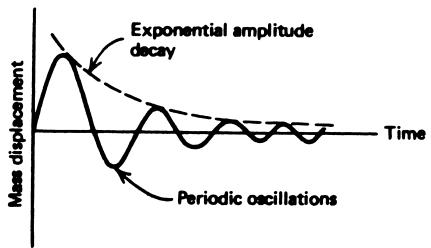
Note
Near \(f_N\), the system can resonate → large motion and nonlinear response.
Accelerometer Under Vibration
Consider a spring–mass accelerometer mounted on a vibrating table.
Table motion: \[x_{\text{table}}(t) = x_0 \sin(\omega t)\]
Table acceleration: \[a(t) = -\omega^2 x_0 \sin(\omega t)\]
Using \(ma = k\Delta x\):
\[ \Delta x = -\frac{m x_0}{k}\, \omega^2 \sin(\omega t) \tag{29} \]
Where:
- \(x_0\) = table vibration amplitude
- \(\Delta x\) = relative mass motion
- \(\omega = 2\pi f\) = applied angular frequency
Key idea (ignoring resonance):
- \(\Delta x \propto \omega^2 x_0\) → response grows with frequency squared.
Frequency Response & Resonance
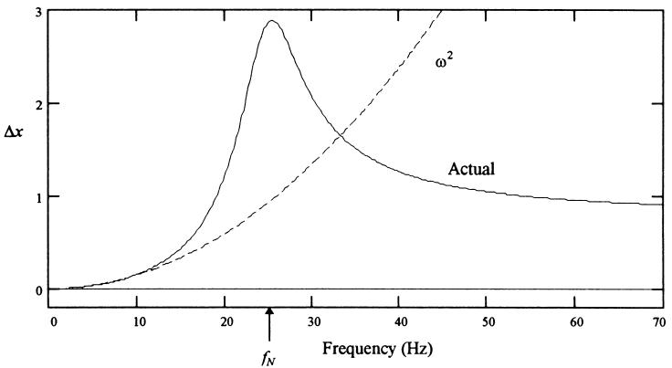
- Actual response vs. ideal \(\omega^2\)
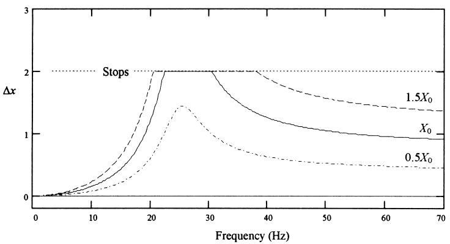
- Saturation by physical stops; high‑frequency displacement behavior
Rules of thumb:
- \(f < f_N\):
- For \(f \lesssim f_N / 2.5\), response approximates Equations (25) and (29).
- \(f \gg f_N\):
- Output becomes essentially a displacement sensor for \(x_0\), almost independent of \(f\).
- Near \(f_N\):
- Large, nonlinear response → avoid using accelerometers near resonance.
Example 14 – Accelerometer Range & Natural Frequency
An accelerometer:
- Seismic mass: \(m = 0.05\ \mathrm{kg}\)
- Spring constant: \(k = 3.0 \times 10^3\ \mathrm{N/m}\)
- Max mass displacement before hitting stops: \(\pm 0.02\ \mathrm{m}\)
Find:
- Maximum measurable acceleration in g.
- Natural frequency \(f_N\).
Solution
- Maximum acceleration (at max \(\Delta x\)):
\[ a = \frac{k}{m} \Delta x = \frac{3.0 \times 10^3}{0.05}(0.02) \approx 1200\ \mathrm{m/s^2} \]
Convert to g’s:
\[ a \approx \frac{1200}{9.8} \approx 122\ \mathbf{g} \]
- Natural frequency:
\[ f_N = \frac{1}{2\pi} \sqrt{\frac{k}{m}} = \frac{1}{2\pi} \sqrt{\frac{3.0 \times 10^3}{0.05}} \approx 39\ \mathrm{Hz} \]
Tip
This accelerometer can measure up to about ±122 g, but has a fairly low natural frequency (~39 Hz), so it is not suitable for high‑frequency vibration.
Types of Accelerometers (Overview)
We now examine several implementation types, all using the same basic mass–spring concept but with different displacement sensing:
- Potentiometric
- LVDT‑based
- Variable reluctance
- Piezoelectric
Each has characteristic range, natural frequency, and output type.
Potentiometric Accelerometers
- Spring‑mass system with the mass connected to the wiper of a potentiometer.
- Mass motion → wiper motion → resistance change.
- Requires excitation (voltage) + signal‑conditioning to get a usable voltage or current output.
- Typical:
- Natural frequency \(< 30\ \mathrm{Hz}\)
- Used for steady‑state or low‑frequency acceleration.
Note
Advantages: simple, low cost. Disadvantages: limited bandwidth, mechanical wear, not suited for harsh vibration.
LVDT‑Based Accelerometers
Use an LVDT (Linear Variable Differential Transformer) to measure mass displacement.
- The LVDT core serves as the seismic mass.
- Core motion → change in induced differential voltage → linear displacement signal.
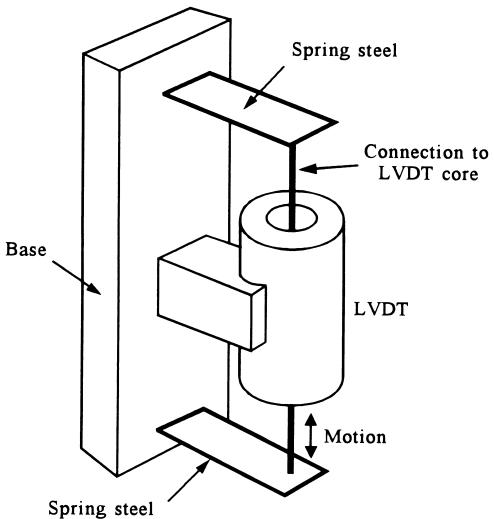
Typical features:
- Natural frequency \(\lesssim 80\ \mathrm{Hz}\)
- Excellent linearity over range
- Used for steady‑state and low‑frequency vibration measurements
Variable‑Reluctance Accelerometers
- Rely on changing magnetic flux and induced voltage.
- Test mass is a permanent magnet.
- As the magnet moves within a coil, it induces a voltage.
Key traits:
- Output only when the mass is moving (no DC/static acceleration).
- Used mainly for vibration and shock.
- Natural frequency typically \(\lesssim 100\ \mathrm{Hz}\).
- Common application: geophones in oil exploration (measuring ground vibration).
Important
These are dynamic‑only sensors: no output for constant acceleration (e.g., constant tilt).
Piezoelectric Accelerometers
Use the piezoelectric effect: a crystal generates a voltage when mechanically stressed.
- Test mass presses on a piezoelectric crystal.
- Acceleration → inertial force \(F = ma\) on mass → stress on crystal → voltage.
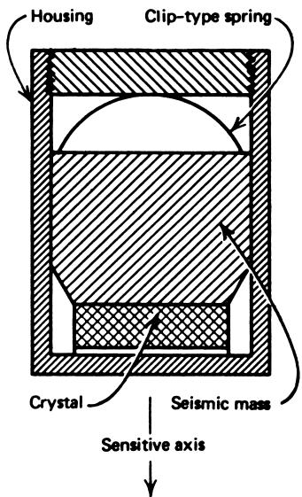
Features:
- Very high natural frequency (often \(> 5\ \mathrm{kHz}\)).
- Ideal for vibration and shock measurements.
- Output: small voltage (mV range), very high source impedance → needs a high‑impedance, low‑noise amplifier.
- Cannot truly measure DC acceleration (behaves like a high‑pass system).
Application: Steady‑State Acceleration & Integration
For nonperiodic or slowly varying acceleration (e.g., vehicle motion, elevator):
Requirements:
- Sufficient range for expected accelerations.
- Natural frequency high enough that its period is shorter than time scale of acceleration changes.
Integration strategy:
- Integrate acceleration to get velocity.
- Integrate again to get position.
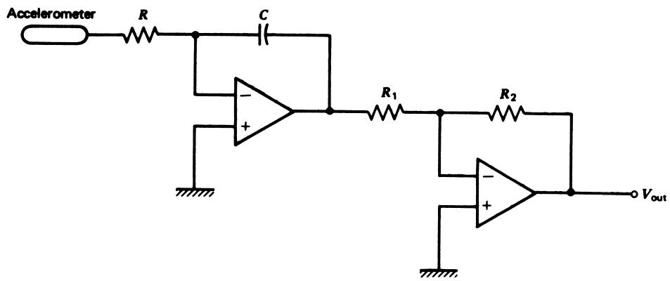
Example 15 – Integrator Design for Velocity
An accelerometer outputs \(14\ \mathrm{mV/g}\).
Design signal conditioning to produce a velocity signal scaled at \(0.25\ \mathrm{V}\) per \((\mathrm{m/s})\). Determine:
- Overall gain factor
- Feedback resistor ratio \(R_2/R_1\) in the final op‑amp stage
Solution outline
- Convert sensitivity to \(\mathrm{mV / (m/s^2)}\):
\[ K = 14\ \frac{\mathrm{mV}}{\mathbf{g}} \cdot \frac{1\ \mathbf{g}}{9.8\ \mathrm{m/s^2}} \approx 1.43\ \frac{\mathrm{mV}}{\mathrm{m/s^2}} \]
- Let \(V_a = K a\) be accelerometer output.
- Feed into op‑amp integrator:
\[ V_v = -\frac{1}{RC} \int V_a dt = -\frac{K}{RC} v \]
- Follow with inverting amplifier of gain \(R_2/R_1\) to flip sign and set scale:
\[ V_{\text{out}} = \left(\frac{R_2}{R_1}\right)\frac{K}{RC} v \]
We want \(V_{\text{out}} = 0.25 v\), so:
\[ 0.25 = \left(\frac{R_2}{R_1}\right)\frac{K}{RC} \]
Choose \(R = 1\ \mathrm{M\Omega}\), \(C = 1\ \mu\mathrm{F}\) ⇒ \(RC = 1\).
Then:
\[ \frac{R_2}{R_1} = \frac{0.25}{1.43 \times 10^{-3}} \approx 175 \]
So one practical choice: \(R_1 = 1\ \mathrm{k\Omega}\), \(R_2 = 175\ \mathrm{k\Omega}\).
Accelerometer Selection Summary
- Steady‑state / low‑frequency:
- Potentiometric, LVDT‑based, capacitive (MEMS) accelerometers.
- Vibration (10 Hz–several kHz):
- Piezoelectric or high‑frequency MEMS devices.
- Shock (\(>500\ \mathbf{g}\), \(\mathrm{kHz}\) bandwidth):
- Piezoelectric accelerometers, specialized high‑g MEMS.
Key spec checklist:
- Range (max g)
- Bandwidth / natural frequency
- Ability to measure DC vs only AC
- Sensitivity and noise
- Environmental robustness (temperature, shock survival)
Pressure: Basic Concepts
Pressure = force per unit area exerted by a fluid (liquid or gas).
SI unit:
- \(1\ \mathrm{Pa} = 1\ \mathrm{N/m^2}\)
Often use prefixes:
- \(1\ \mathrm{kPa} = 10^3\ \mathrm{Pa}\)
- \(1\ \mathrm{MPa} = 10^6\ \mathrm{Pa}\)
Other common units:
- \(\mathrm{psi}\) (pounds per square inch)
- \(1\ \mathrm{psi} \approx 6.895\ \mathrm{kPa}\)
- torr (vacuum systems, low pressure)
- \(1\ \mathrm{torr} \approx 133.3\ \mathrm{Pa}\)
- atmosphere (atm): \(101.325\ \mathrm{kPa} \approx 14.7\ \mathrm{psi}\)
- bar: \(1\ \mathrm{bar} = 100\ \mathrm{kPa}\)
Static vs Dynamic Pressure
- Static pressure: fluid not moving relative to its container.
- Example: water at rest in a vertical tank.
- Dynamic pressure: pressure in a moving fluid depends on flow conditions.
- Example: water in a hose; pressure changes when you open/close the nozzle.
Measurement systems must clearly state whether they are reading:
- Static pressure only, or
- Some combination of static + dynamic (e.g., Pitot tubes in airflow).
Gauge Pressure
Atmospheric pressure at sea level: ~\(14.7\ \mathrm{psi}\) (1 atm).
Often, we care about pressure relative to atmosphere, not absolute.
- Absolute pressure \(p_{\text{abs}}\): measured from vacuum.
- Gauge pressure \(p_g\): relative to ambient atmosphere.
Relationship:
\[ p_g = p_{\text{abs}} - p_{\text{at}} \tag{30} \]
- In English units, use psig for gauge pressure.
Note
A sealed container at \(14.7\ \mathrm{psi}\) absolute, sitting at sea level, has \(p_g = 0\) (no net force on the walls).
Head Pressure (Hydrostatic Pressure)
For a liquid column of depth \(h\):
SI form:
\[ p = \rho g h \tag{31} \]
Where:
- \(p\) = pressure (Pa)
- \(\rho\) = mass density \((\mathrm{kg/m^3})\)
- \(g \approx 9.8\ \mathrm{m/s^2}\)
- \(h\) = depth (m)
English form using weight density \(\rho_w\) \((\mathrm{lb/ft^3})\):
\[ p = \rho_w h \tag{32} \]
Where \(p\) is in \(\mathrm{lb/ft^2}\).
To get psi, divide by 144 (since \(1\ \mathrm{ft^2} = 144\ \mathrm{in^2}\)).
Tip
“Feet (or meters) of water” is a pressure unit: it’s shorthand for the pressure produced by that water column height.
Example 16 – Tank Bottom Pressure
A tank holds water with depth \(7.0\ \mathrm{ft}\).
Find the pressure at the bottom in:
- Pa
- psi
Given: water density \(\rho = 10^3\ \mathrm{kg/m^3}\).
Solution
Convert depth:
\[ h = 7.0\ \mathrm{ft} = 7.0 \cdot 0.3048\ \mathrm{m/ft} \approx 2.1\ \mathrm{m} \]
Use Equation (31):
\[ p = \rho g h = (10^3)(9.8)(2.1) \approx 2.1 \times 10^4\ \mathrm{Pa} = 21\ \mathrm{kPa} \]
To express in psi, we can use \(\rho_w \approx 62.4\ \mathrm{lb/ft^3}\).
Pressure in \(\mathrm{lb/ft^2}\):
\[ p = \rho_w h = (62.4\ \mathrm{lb/ft^3})(7.0\ \mathrm{ft}) = 437\ \mathrm{lb/ft^2} \]
Convert to psi:
\[ p = \frac{437}{144}\ \mathrm{psi} \approx 3\ \mathrm{psi} \]
Pressure‑to‑Displacement Elements
Most industrial pressure sensors first convert pressure → displacement, then measure displacement electrically.
Common mechanical elements:
- Diaphragm
- Bellows
- Bourdon tube
Then convert displacement with:
- Potentiometers
- LVDTs
- Strain gauges
- Capacitive sensors
Diaphragm Pressure Element
A thin flexible metal diaphragm with pressures \(p_1\) and \(p_2\) on each side.
Net force:
\[ F = (p_2 - p_1) A \tag{33} \]
Where \(A\) is diaphragm area.
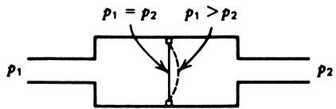
- Diaphragm deflects until Hooke’s law force balances pressure force.
- Deflection (displacement) is proportional to pressure difference.
Bellows & LVDT Combination Pressure Element
Bellows: an accordion‑like metal structure.
- Pressure difference causes straight‑line expansion or contraction.
- Displacement is nearly linear with \(\Delta p\).
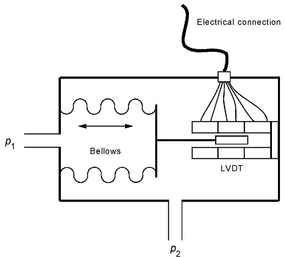
- An LVDT measures bellows tip displacement.
- Output voltage then becomes a linear function of pressure.
Bourdon Tube Pressure Element
Probably the most common mechanical pressure‑to‑displacement element.
Construction:
- Start with a hard metal tube (e.g., brass), flatten its cross‑section.
- Bend into a curved arc or spiral.
- Seal one end, connect other end to pressure source.
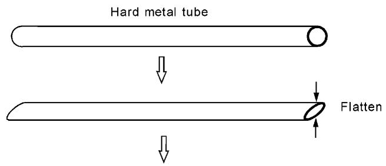
Operation:
- If internal pressure > external pressure, tube tends to straighten.
- If internal pressure < external, tube tends to curl more.
- Tip motion is proportional to pressure difference.
Most analog round‑dial pressure gauges use a Bourdon tube driving a pointer via gears.
Electronic Pressure Conversion
Once we have displacement, we can convert to an electrical signal using:
- Potentiometers – measure displacement as resistance.
- Strain gauges – often bonded directly to diaphragms.
- Inductive sensors – LVDTs, variable reluctance arrangements.
- Capacitive sensors – especially in MEMS devices.
Advanced differential pressure cell with feedback:
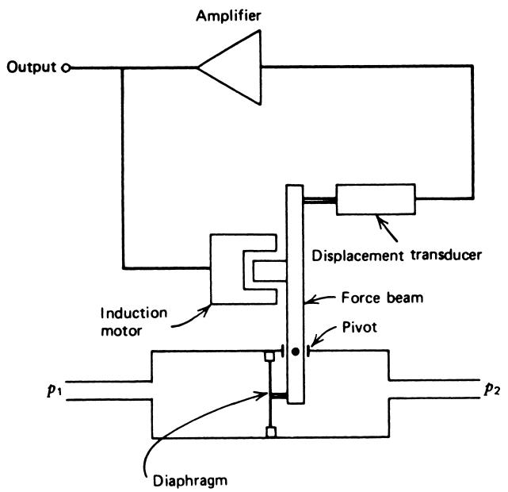
- A diaphragm senses \(\Delta p = p_1 - p_2\).
- A feedback actuator (e.g., induction motor) keeps diaphragm nearly centered.
- Drive signal needed to null deflection becomes the pressure measurement.
Solid‑State (Silicon) Pressure Sensors
Integrated‑circuit technology enables compact solid‑state (SS) pressure sensors.
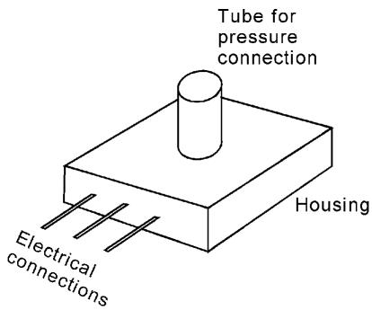
Inside:
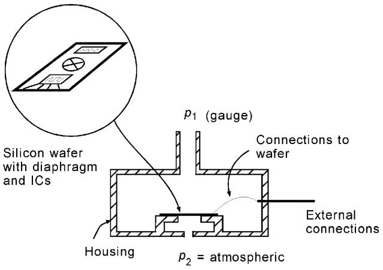
- A thin silicon diaphragm deflects under pressure.
- Semiconductor strain gauges are diffused directly into the silicon.
- On‑chip signal conditioning: amplification, temperature compensation, linearization.
Configurations:
- Gauge: one side open to atmosphere.
- Absolute: one side sealed and evacuated.
- Differential: both sides connected to two different pressures.
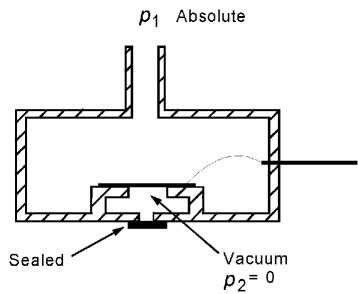
Solid‑State Pressure Sensor Specs
Typical characteristics:
- Sensitivity: 10–100 mV/kPa.
- Response time: around 10 ms (10–90% step response).
- Not truly first‑order; vendor defines its own response time spec.
- Output: approximately linear voltage vs pressure over the operating range.
- Interface: often just three wires:
- Supply (e.g., +5 V)
- Ground
- Output (analog voltage)
Applications:
- Low‑pressure process control (0–100 kPa range).
- Level sensing via head pressure.
- Consumer products: washing machines, dishwashers, HVAC.
Example 17 – Level Measurement with SS Pressure Sensor
A SS pressure sensor outputs \(25\ \mathrm{mV/kPa}\) over 0–25 kPa.
We measure the level of a liquid with density \(\rho = 1.3 \times 10^3\ \mathrm{kg/m^3}\) by mounting the sensor at the tank bottom.
Find:
- Output voltage for levels from 0 to \(2.0\ \mathrm{m}\).
- Sensitivity in \(\mathrm{mV/cm}\) of level.
Solution
At height \(h\):
\[ p = \rho g h = (1.3 \times 10^3)(9.8)(h) \]
For \(h = 2.0\ \mathrm{m}\):
\[ p = 1.3 \times 10^3 \cdot 9.8 \cdot 2.0 \approx 25.48\ \mathrm{kPa} \]
Sensor output:
\[ V = (25\ \mathrm{mV/kPa})(25.48\ \mathrm{kPa}) \approx 637\ \mathrm{mV} = 0.637\ \mathrm{V} \]
So, for 0–2.0 m: 0–0.637 V.
Sensitivity per cm (200 cm range):
\[ S = \frac{637\ \mathrm{mV}}{200\ \mathrm{cm}} \approx 3.19\ \mathrm{mV/cm} \]
Very Low Pressure (Vacuum) Sensors
For \(p < 1\) atm, down to about \(10^{-3}\) atm, two heat‑based methods:
- Pirani gauge
- Measures filament temperature via resistance in a bridge circuit.
- Heat loss ∝ number of gas molecules → pressure.
- Highly nonlinear, gas‑type dependent.
- Thermocouple gauge
- Measures filament temperature with a thermocouple attached to the filament.
- Output voltage ∝ temperature ∝ pressure (nonlinear).
For even lower pressures (\(10^{-3}\) to \(10^{-13}\) atm):
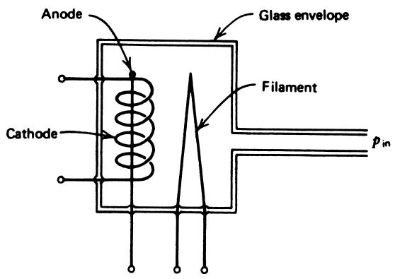
- Electrons from a heated filament ionize gas molecules.
- Current between electrodes ∝ ion density ∝ pressure.
Summary / Key Points
- Motion sensing starts from \(x(t)\), \(v(t)\), \(a(t)\) relationships: accelerometers measure acceleration, which can be integrated to get velocity and position.
- Types of motion: rectilinear, angular, vibration, and shock. Each calls for different sensor ranges and bandwidths.
- The spring–mass accelerometer uses \(F = ma\) and \(F = k\Delta x\) ⇒ \(a = (k/m)\Delta x\).
- Natural frequency and damping determine how an accelerometer responds to vibration.
- Avoid using near resonance (\(f \approx f_N\)).
- Accelerometer types:
- Potentiometric and LVDT: good for steady or low‑frequency motion.
- Variable‑reluctance: dynamic (vibration/shock) only.
- Piezoelectric: high‑frequency vibration and shock; no DC.
- Pressure is force per unit area, usually measured in Pa, psi, or related units.
- Gauge pressure: \(p_g = p_{\text{abs}} - p_{\text{at}}\).
- Hydrostatic head: \(p = \rho g h\).
- Common pressure elements: diaphragm, bellows, Bourdon tube.
- Displacement → potentiometer, LVDT, strain gauge, etc.
- Solid‑state pressure sensors use silicon diaphragms with on‑chip strain gauges and conditioning, offering simple voltage outputs for 0–100 kPa ranges.
Formula Summary
Kinematics & Vibration
Velocity from position: \[v(t) = \frac{dx(t)}{dt} \tag{16}\]
Acceleration from velocity/position: \[a(t) = \frac{dv(t)}{dt} = \frac{d^2 x(t)}{dt^2} \tag{17}\]
Velocity from acceleration (integral): \[v(t) = v(0) + \int_0^t a(\tau)\, d\tau \tag{18}\]
Position from velocity (integral): \[x(t) = x(0) + \int_0^t v(\tau)\, d\tau \tag{19}\]
Sinusoidal vibration: \[x(t) = x_0 \sin(\omega t) \tag{20}\]
Angular frequency–frequency relation: \[\omega = 2\pi f \tag{21}\]
Vibration velocity: \[v(t) = \omega x_0 \cos(\omega t) \tag{22}\]
Vibration acceleration: \[a(t) = -\omega^2 x_0 \sin(\omega t) \tag{23}\]
Peak acceleration: \[a_{\text{peak}} = \omega^2 x_0 \tag{24}\]
Formula Summary (cont.)
Accelerometer & Dynamics
Spring–mass equilibrium: \[ma = k\Delta x \tag{25}\]
Acceleration–displacement relation: \[a = \frac{k}{m}\Delta x \tag{26}\]
Natural frequency (Hz): \[f_N = \frac{1}{2\pi}\sqrt{\frac{k}{m}} \tag{27}\]
Damped transient response: \[X_T(t) = X_0 e^{-\alpha t}\sin(2\pi f_N t) \tag{28}\]
Mass motion under vibration (simplified): \[\Delta x = -\frac{m x_0}{k}\omega^2 \sin(\omega t) \tag{29}\]
Pressure & Head
Gauge pressure: \[p_g = p_{\text{abs}} - p_{\text{at}} \tag{30}\]
Hydrostatic pressure (SI): \[p = \rho g h \tag{31}\]
Hydrostatic pressure (English, weight density): \[p = \rho_w h \tag{32}\]
Diaphragm force: \[F = (p_2 - p_1)A \tag{33}\]
Motion & Pressure Sensors – Interactive Deck
Warm‑Up: Unit Conversion (Acceleration)
Use Pyodide to convert acceleration from ft/s² to m/s² and g.
Explore Vibration: \(x(t)\), \(v(t)\), \(a(t)\)
Visualize sinusoidal vibration position, velocity, and acceleration.
Reactive Vibration Explorer
Use sliders to control frequency and peak displacement, then see the vibration responses.
Important
Notice how small changes in \(f\) have a big effect on peak acceleration because \(a_{\text{peak}} = \omega^2 x_0\).
Peak Acceleration vs Frequency
Plot \(a_{\text{peak}} = \omega^2 x_0\) as a function of frequency for different \(x_0\).
Spring–Mass Accelerometer: Natural Frequency
Experiment with \(m\), \(k\) and see how natural frequency changes.
Reactive Spring–Mass Designer
Adjust \(m\) and \(k\) via sliders and see \(f_N\) plus a suggested usable bandwidth.
Tip
As a rule of thumb, use an accelerometer up to roughly \(f_N / 2.5\) for accurate acceleration measurements.
Shock Example: Drop Test Simulator
Simulate average deceleration from a drop of height \(h\) with shock duration \(T_d\).
Reactive Shock Explorer
Use sliders for drop height and shock duration; plot average g as a function of \(h\).
Pressure: Unit Conversion Playground
Practice converting between Pa, kPa, psi, and atm.
Hydrostatic Pressure vs Depth
Use sliders to explore \(p = \rho g h\) for different depths and fluid densities.
Level‑to‑Voltage Mapping (SS Pressure Sensor)
Simulate Example 17: level measurement using a SS pressure sensor.
Reactive Level Sensor Simulator
Interactively see how tank level maps to pressure and sensor output voltage.
Reflection: What Did You Observe?
Use your experiments to answer:
- How does vibration frequency vs amplitude affect peak acceleration?
- How do mass and spring constant change the natural frequency of an accelerometer?
- How does hydrostatic pressure scale with depth and density?
- How does a pressure sensor’s sensitivity (mV/kPa) translate into a level sensitivity (mV/cm)?
Note
Capture these observations—they form the basis of lab reports and exam solutions.